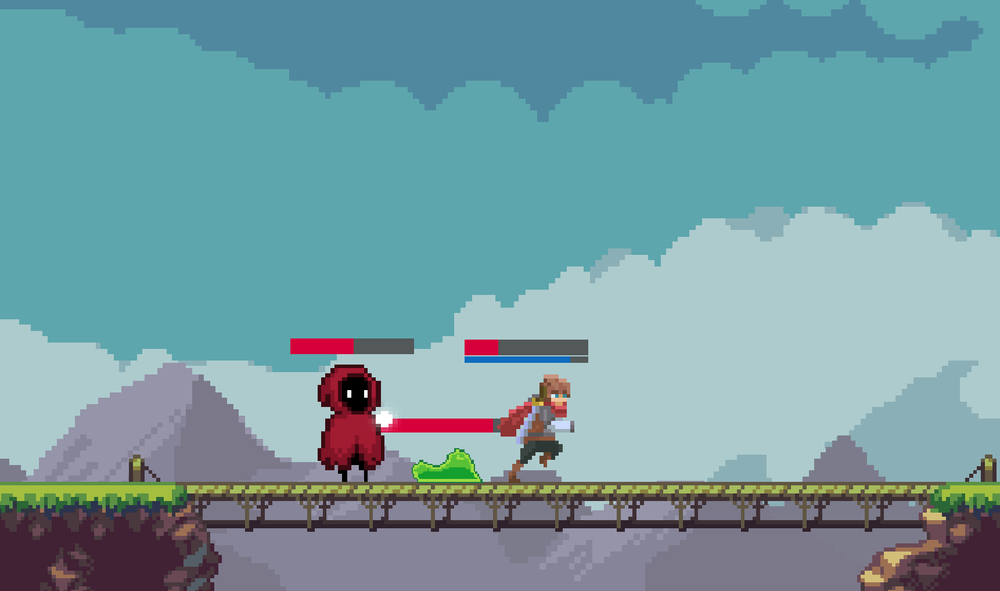
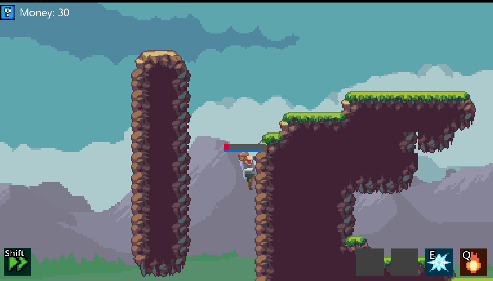
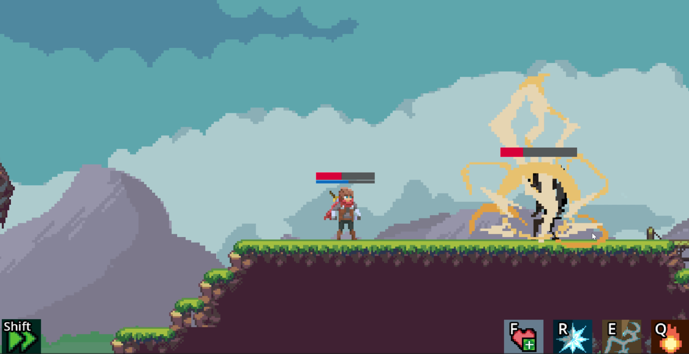
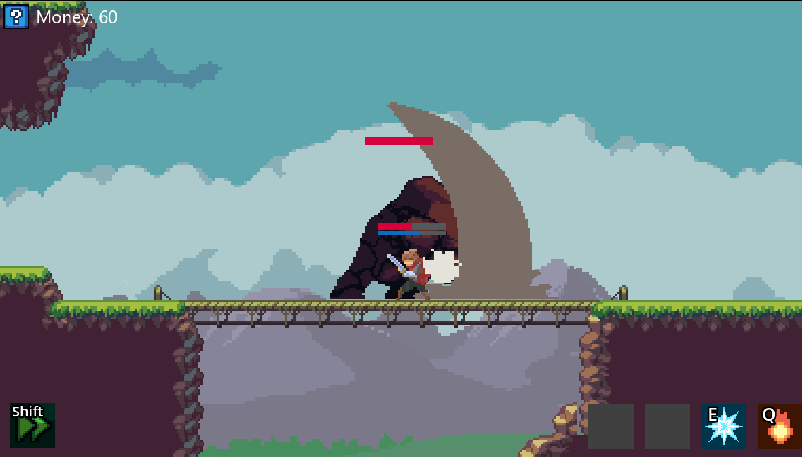

Spellcast
An action adventure platformer fueled by combat, exploration and powerful magic. Fight your way through various foes, unlock unique abilities, and prepare for the final challenge.
Made by: Sean Gillespie, Caitlin Popovic, Omar Amoura, and Saif Ammar
Find the game on Itch.io -- https://recovery-0ne.itch.io/spellcast




Sean Gillespie
Carleton University Computer Science Student
First started programming in high school, taking a special interest in game development. Prefers to live on the mechanics side of things, but is comfortable in most areas. What began with simple text-based games soon evolved into making 2D, 3D, and even VR games solo or as part of a larger team.
Caitlin Popovic
Carleton University Computer Science Student
Omar Amoura
Carleton University Computer Science Student
First got into programming after watching his dad code for work. He began taking programming classes all through high school, and eventually ended up choosing Computer Science at Carleton. He's always been into games and thought it was so interesting how people could build these fun worlds from scratch, and he knew he wanted to be a part of that.
Saif Ammar
Carleton University Computer Science Student